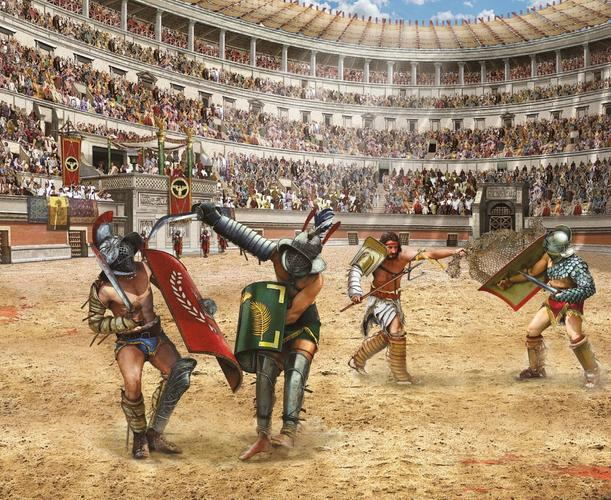

História
Há registros longínquos da existência do boxe já no ano 3.000 a.C., no Egito. Mas foi na Grécia Antiga, no século 7 a.C., que a modalidade começou a tomar cara de esporte. A história do boxe, no entanto, é cheia de altos e baixos. Embora tenha feito parte das Olimpíadas da Grécia Antiga, quando os lutadores apenas protegiam as mãos com pedaços de couro, o boxe chegou a morrer.

Durante o Império Romano, houve alterações no mínimo controversas na modalidade. O boxe passou a ser protagonizado pelos gladiadores, que lutavam com luvas recheadas de metal. Algo propício para o objetivo dos combates, já que na maioria das vezes a disputa terminava com a morte de um dos lutadores.

Com o fim do império, o boxe “hibernou” por um bom tempo. Foi reaparecer no século 17, na Inglaterra. Em 1880, passaram a ser organizadas competições amadoras da modalidade nas categorias Galo (até 54kg), Pena (até 57kg), Leve (até 63,5kg), Médio (até 73kg) e Pesado (qualquer peso).
O boxe entrou nas Olimpíadas em 1904, em St. Louis. Desde então, passou por algumas mudanças importantes, como a obrigatoriedade do uso do capacete, determinada a partir dos Jogos de Los Angeles-1984; a adesão ao sistema eletrônico de pontuação, em Barcelona-1992; e a uniformidade da pontuação das lutas, em Pequim-2008. Outra mudança significativa ocorreu na última edição dos Jogos, em Londres-2012: a introdução do boxe feminino em três categorias (Mosca, até 51kg; Leve, até 60kg; e Meio-pesado, até 75kg).
Para as Olimpíadas do Rio de Janeiro, a Federação Internacional de Boxe (AIBA) criou um novo sistema para permitir que lutadores profissionais participem dos Jogos pela primeira vez. Mas isso não significa que nomes como Floyd Mayweather vão estar no Rio, já que é preciso atender a alguns critérios e participar ativamente da APB (AIBA Pro Boxing), liga profissional da federação. Além disso, outras regras serão alteradas, como a obrigatoriedade do uso do capacete e de camiseta.